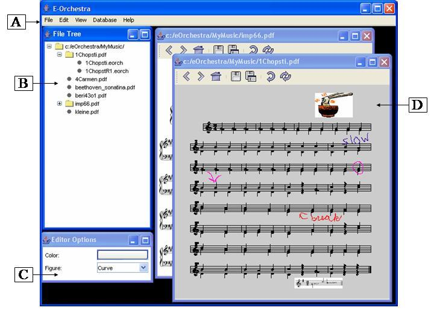

E-Orchestra:
E-Orchestra is a system that uses Tablet PCs, to facilitate a band or orchestra by making changes to musical piece. A library of sheet music is stored on a server and is accessible to each Tablet PC. The music can be retrieved from the database, viewed, and edited. The program is comprised of a client side and a server side that interact by passing messages.
The main window of EOrchestra is shown below. The menu bar (Letter A) is used to open files, exit out of E-Orchestra, change view preferences, and interact with the database. The file tree (Letter B) will display all the sheet music files that can be opened by double clicking on a file. The editor options (Letter C) displays the current color and figure (curve, straight line, oval, and rectangle) for editing the sheet music. The display window (Letter D) displays the contents of the sheet music file and provides buttons for the user to flip through the pages of music.
